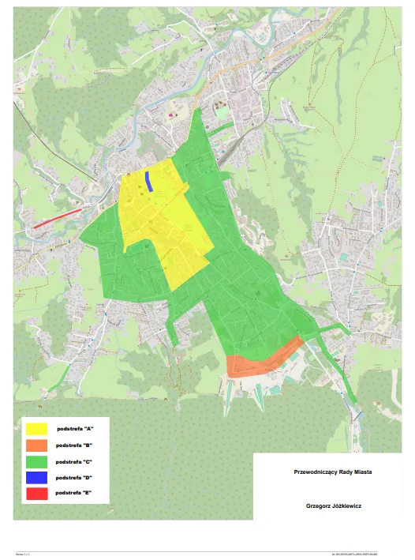
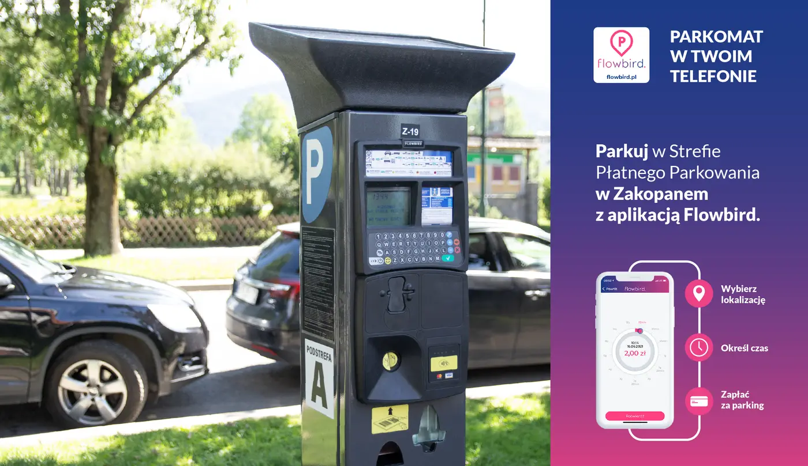

Praktyczne · Transport
Strefy, ceny, godziny i mandaty. Wszystko z uchwał Rady Miasta.
Przyjazd autem do Zakopanego kończy się zwykle tym samym pytaniem: gdzie zostawić samochód i ile to będzie kosztować. Miasto ma strefę płatnego parkowania podzieloną na podstrefy, w których obowiązują różne stawki, a w ścisłym centrum płaci się również w soboty i niedziele. Poniżej znajdziesz aktualny cennik, wykaz ulic, godziny obowiązywania opłat, sposoby płatności i wysokość opłaty dodatkowej, czyli tego, co potocznie nazywamy mandatem za brak biletu.
Strefa obejmuje ścisłe centrum i główne ulice dojazdowe. Podzielona jest na pięć podstref oznaczonych literami od A do E, przy czym różnią się one nie tylko ceną, ale też dniami, w które trzeba płacić.

Aleja 3 Maja (bez parkingu należącego do podstrefy D), Tadeusza Kościuszki (od Sienkiewicza do Krupówek), marsz. Józefa Piłsudskiego (od Staszica do Przerwy-Tetmajera), Słoneczna, Stanisława Staszica (od Alei 3 Maja do Krupówek), Mariusza Zaruskiego, Juliusza Zborowskiego, Nowotarska (od ronda Dmowskiego do skrzyżowania z Kościeliską i Krupówkami), Władysława Orkana.
marsz. Józefa Piłsudskiego (od Szymanowskiego do Czecha) oraz Bronisława Czecha.
Brzozowa, Bulwary Słowackiego, Chramcówki (od ronda Chramca do Do Samków), Droga do Białego, Droga na Bystre, Gimnazjalna, Grunwaldzka, Jagiellońska, Kasprusie, Kościelna, Tadeusza Kościuszki (od ronda Armii Krajowej do Sienkiewicza), Heleny Modrzejewskiej, Partyzantów, marsz. Józefa Piłsudskiego (od Przerwy-Tetmajera do Szymanowskiego), Sabały, Henryka Sienkiewicza, ks. Józefa Stolarczyka, Strążyska, Kazimierza Przerwy-Tetmajera, Stanisława Witkiewicza, Władysława Zamoyskiego, Do Samków.
Parking po wschodniej stronie Alei 3 Maja, poniżej ulicy Kościuszki od strony ronda Solidarności. Przeznaczony wyłącznie do postoju autobusów.
Ulica Powstańców Śląskich na odcinku od skrzyżowania z ulicą Ubocz do skrzyżowania z ulicą Gładkie. Tu opłatę pobiera inkasent, a nie parkomat – dostajesz kwit z godziną przyjazdu, który trzeba położyć za przednią szybą. Według uchwały ta podstrefa należy do zwykłej, a nie śródmiejskiej strefy płatnego parkowania, więc opłaty obowiązują tu wyłącznie w dni robocze.
Stawki dla kierowców bez abonamentu, czyli dla wszystkich przyjezdnych. Zwróć uwagę na charakterystyczny układ: druga i trzecia godzina są droższe od pierwszej, a czwarta i każda kolejna wraca do stawki podstawowej. To ma zniechęcać do blokowania miejsc w centrum na dwie, trzy godziny.
| Czas postoju | Podstrefa A | B | C | D | E |
|---|---|---|---|---|---|
| Opłata minimalna (30 minut) | 5,00 zł | 4,00 zł | 4,00 zł | – | 4,00 zł |
| Pierwsza godzina | 8,00 zł | 6,00 zł | 6,00 zł | 8,40 zł | 6,00 zł |
| Druga godzina | 9,60 zł | 7,00 zł | 7,00 zł | 10,00 zł | 7,00 zł |
| Trzecia godzina | 11,50 zł | 8,00 zł | 8,20 zł | 12,00 zł | 8,20 zł |
| Czwarta i kolejne | 8,00 zł | 6,00 zł | 6,00 zł | 8,40 zł | 6,00 zł |
W podstrefie B przy jednorazowej wpłacie za siedem i więcej godzin w danym dniu obowiązuje stawka 45,00 zł. Wpłata wyższa niż 45,00 zł jest przeliczana na minuty postoju w kolejnych dniach. Mieszkańcy z aktywnym abonamentem „Zakopiańczyk" płacą według osobnego, niższego cennika.
Trzy godziny na Krupówkach, czyli w podstrefie A, to 29,10 zł (8,00 + 9,60 + 11,50). Te same trzy godziny w podstrefie C wyjdą 21,20 zł. Cały dzień, od 8:00 do 21:00, to w podstrefie A już grubo ponad 100 zł. Przy dłuższym pobycie parking przy noclegu zwraca się pierwszego dnia.
To najczęstsze źródło nieporozumień, bo w Zakopanem obowiązują dwa różne reżimy w zależności od tego, gdzie stoi auto.
W zwykłej strefie opłat nie pobiera się w dni ustawowo wolne od pracy: 1 i 6 stycznia, w Poniedziałek Wielkanocny, 1 i 3 maja, 15 sierpnia, 1 i 11 listopada oraz 25 i 26 grudnia.
Poza godzinami 8:00–21:00 parkowanie jest bezpłatne wszędzie. Wieczorem po 21:00, w nocy i rano przed ósmą nie musisz kupować biletu. Jeśli wrzucisz opłatę poza godzinami obowiązywania strefy, zostanie ona zaliczona na poczet postoju w kolejnym okresie płatnym.
Opłatę wnosi się bez wezwania, najpóźniej 5 minut od zaparkowania. Tyle samo masz na odjazd po wygaśnięciu biletu – postój dłuższy niż 5 minut po upływie opłaconego czasu jest traktowany jak brak opłaty. Nie ma więc marginesu na „jeszcze tylko kawa".
W podstrefach A, B, C i D masz dwie drogi: parkomat, gdzie zapłacisz gotówką lub kartą, albo aplikacja w telefonie. Miasto obsługuje trzy: Flowbird, SkyCash i Mobilet. Aplikacja jest wygodniejsza, bo płacisz za faktyczny czas postoju i możesz go przedłużyć bez wracania do auta.

Bilet z parkomatu trzeba położyć za przednią szybą, w widocznym miejscu, tak żeby dało się odczytać wszystkie dane. Przy płatności aplikacją nic nie kładziesz – kontroler sprawdza numer rejestracyjny w systemie.
Kontrolę prowadzi firma zewnętrzna działająca na zlecenie miasta oraz Straż Miejska. Kontrolerzy mają identyfikatory ze zdjęciem noszone w widocznym miejscu i nie są uprawnieni do przyjmowania jakichkolwiek opłat na miejscu. Jeśli ktoś próbuje zainkasować gotówkę przy aucie, to nie jest kontroler.
Za stwierdzenie postoju bez opłaty wystawiane jest zawiadomienie o opłacie dodatkowej, zostawiane za wycieraczką lub wręczane kierowcy.
Opłata dodatkowa wynosi 300,00 zł. Jeśli zapłacisz ją w ciągu 3 dni kalendarzowych od wystawienia zawiadomienia, kwota spada do 120,00 zł. To różnica 180 zł za jedną wizytę w bankowości internetowej, więc naprawdę nie warto odkładać tego na później.
Opłatę dodatkową wnosi się przelewem na rachunek wskazany w zawiadomieniu – nigdy do rąk kontrolera. Jeśli uważasz, że zawiadomienie wystawiono niesłusznie, bo postój był opłacony, miałeś ważny abonament albo pojazd jest zwolniony z opłat, możesz złożyć reklamację w terminie do 7 dni kalendarzowych od wystawienia zawiadomienia. Reklamację składa się do Burmistrza Miasta Zakopane pisemnie, mailem na adres spp@zakopane.eu albo przez ePUAP.
Najprostszy sposób to nie wjeżdżać autem do centrum. Zakopane jest małe, a komunikacja miejska dowozi pod większość atrakcji – szczegóły znajdziesz w naszym przewodniku po komunikacji miejskiej. Zostawiasz samochód pod noclegiem i przez cały pobyt do niego nie wracasz.
Warto też wiedzieć, że Droga na Bystre jest w podstrefie C, podobnie jak Bulwary Słowackiego, Jagiellońska czy Chramcówki. Parkowanie przy ulicy w tej okolicy jest więc płatne tak samo jak w centrum. Dlatego przy wyborze noclegu naprawdę warto sprawdzić, czy ma własny parking – przy pobycie tygodniowym to różnica rzędu kilkuset złotych.
W podstrefie A pierwsza godzina to 8,00 zł, druga 9,60 zł, trzecia 11,50 zł. W podstrefach B, C i E pierwsza godzina kosztuje 6,00 zł, druga 7,00 zł, trzecia 8,00 lub 8,20 zł. Czwarta i każda kolejna godzina wraca do stawki za pierwszą.
Od 8:00 do 21:00. Przed ósmą rano i po dwudziestej pierwszej parkowanie jest bezpłatne.
W śródmiejskiej strefie płatnego parkowania tak – opłaty pobierane są od poniedziałku do niedzieli. W zwykłej strefie płatnego parkowania opłat nie ma w weekendy ani w dni ustawowo wolne od pracy.
Opłata dodatkowa to 300,00 zł, a przy zapłacie w ciągu 3 dni kalendarzowych od wystawienia zawiadomienia – 120,00 zł.
Miasto obsługuje Flowbird, SkyCash i Mobilet. Wszystkie są dostępne w Google Play i App Store.
Nie. Droga na Bystre należy wprawdzie do podstrefy C, ale nasi Goście parkują na bezpłatnym parkingu przy willi, a nie przy ulicy.
📅 Artykuł powstał 16 sierpnia 2026 roku. Stawki, wykaz ulic i wysokość opłaty dodatkowej pochodzą z uchwały nr XX/219/2025 Rady Miasta Zakopane z 23 października 2025 r. wraz z późniejszymi zmianami, w tym uchwałą nr XXVII/300/2026 z 28 maja 2026 r. Rada Miasta zmienia te zasady dość często, a strefa bywa rozszerzana o kolejne ulice. Przed przyjazdem sprawdź aktualne dane na stronie zakopane.pl i zwróć uwagę na oznakowanie oraz cennik na parkomacie.
Przyjeżdżasz autem? W Willi Storczyk parking jest bezpłatny dla Gości, a przystanek komunikacji miejskiej masz 30 m od willi – samochód może spokojnie stać przez cały pobyt.
Zobacz pokoje i ceny